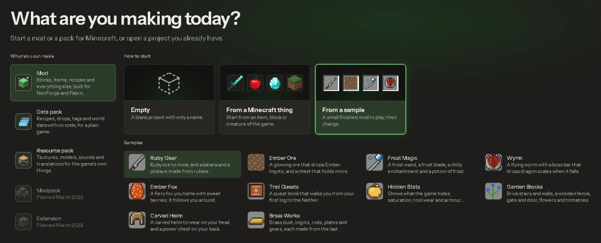

Closed beta
Download Modryos.
Modryos is now in closed beta. Testers get the download link in their invite email.
Windows 10 and 11, 64-bit

- Ask for a placeFill in the short form. It takes a minute.
- Check your inboxWhen your turn comes, your invite email has the download link.
- Install and buildOpen the studio and make your first mod.
Only official downloads
The public releases are listed at github.com/Modryos/modryos/releases. Only downloads from there, from this site or from your invite email are official. Do not trust any other site that offers Modryos.
- SystemWindows 10 or 11, 64-bit
- GamesMinecraft Java Edition